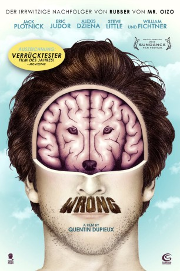

#8928 Wrong
 
 IMDB-Wertung: 6.3 / 10
IMDB-Wertung: 6.3 / 10  Metascore: 0
Metascore: 0 
Dolphs Hund verschwindet eines Tages spurlos. Auf der Suche nach seinem geliebten Vierbeiner trifft Dolph auf eigenartige Gestalten, etwa auf den zwielichtigen Guru Chang, der in die Hundeentführung involviert zu sein scheint, aber auch nicht weiß, wo sich der Hund nun befindet. Von einem Hunde-Detektiv erhofft sich Dolph Klärung, doch der hat selbst professionelle Hilfe psychiatrischer Art nötig. So wird die Suche nach dem Hund für Dolph zu einer Odyssee zu sich selbst...
Jahr: 2012
Dauer: 93 Minuten
FSK: 12
Land: Frankreich Studio: Sunfilm EntertainmentTonspuren: DTS - ,
Untertitel: Deutsch,
Auflösung: 1080p (1920x1040) Größe: 3491 MB
Genre: Komödie, Mystery
Regisseur: Quentin Dupieux
Drehbuch: Quentin Dupieux
Soundtrack: David Sztanke
Darsteller:
 Jack Plotnick als Dolph Springer
Jack Plotnick als Dolph Springer- Eric Judor als Victor
 Alexis Dziena als Emma
Alexis Dziena als Emma Steve Little als Detective Ronnie
Steve Little als Detective Ronnie William Fichtner als Master Chang
William Fichtner als Master Chang- Regan Burns als Mike
- Mark Burnham als Cop
 Arden Myrin als Boss Gabrielle
Arden Myrin als Boss Gabrielle Maile Flanagan als Pharmacist
Maile Flanagan als Pharmacist- Todd Giebenhain als Pizza Delivery Man
- Barry Alan Levine als Gas Station Attendant
- LeShay N. Tomlinson als Jogger
 Price Carson als Limo Driver
Price Carson als Limo Driver Gary Valentine als EMT Nurse
Gary Valentine als EMT Nurse- Charley Koontz als Colleague Richard
- Jared Farid Ward als Colleague Hugo
 Nealla Gordon als Colleague Jodie
Nealla Gordon als Colleague Jodie- Flying Lotus als Lead Firefighter
 Bob Jennings als Rear Ender Driver
Bob Jennings als Rear Ender Driver- Cole Jensen als Emma's & Victor's Son Willy
- Tony Ruiz als Taxi Driver
- Ian J. Putnam als Emma's Husband
- Bo Barrett als Clerk
- Kuma als Paul
- Gregorio als Painting Guy
- Gregory Bernard als Colleague Greg
- David Nicolas als Fire Chief
- Alex Ridha als Fire Engineer
- Max Nicolas als Joshua
- T. Scott Keiner als Dognapper
- Josef Lieck als Undertaker
- Pete Dicecco als Bus Driver
Datei: X:\2012(N-Z)\Wrong (2012, FSK12, 1920x1040).mkv seit 08.05.2018
Festplatte: HD 2012(N-Z)-2013(A-H)
 Es gibt insgesamt 138 Filme in der Gruppe '2012(N-Z)'
Es gibt insgesamt 138 Filme in der Gruppe '2012(N-Z)'